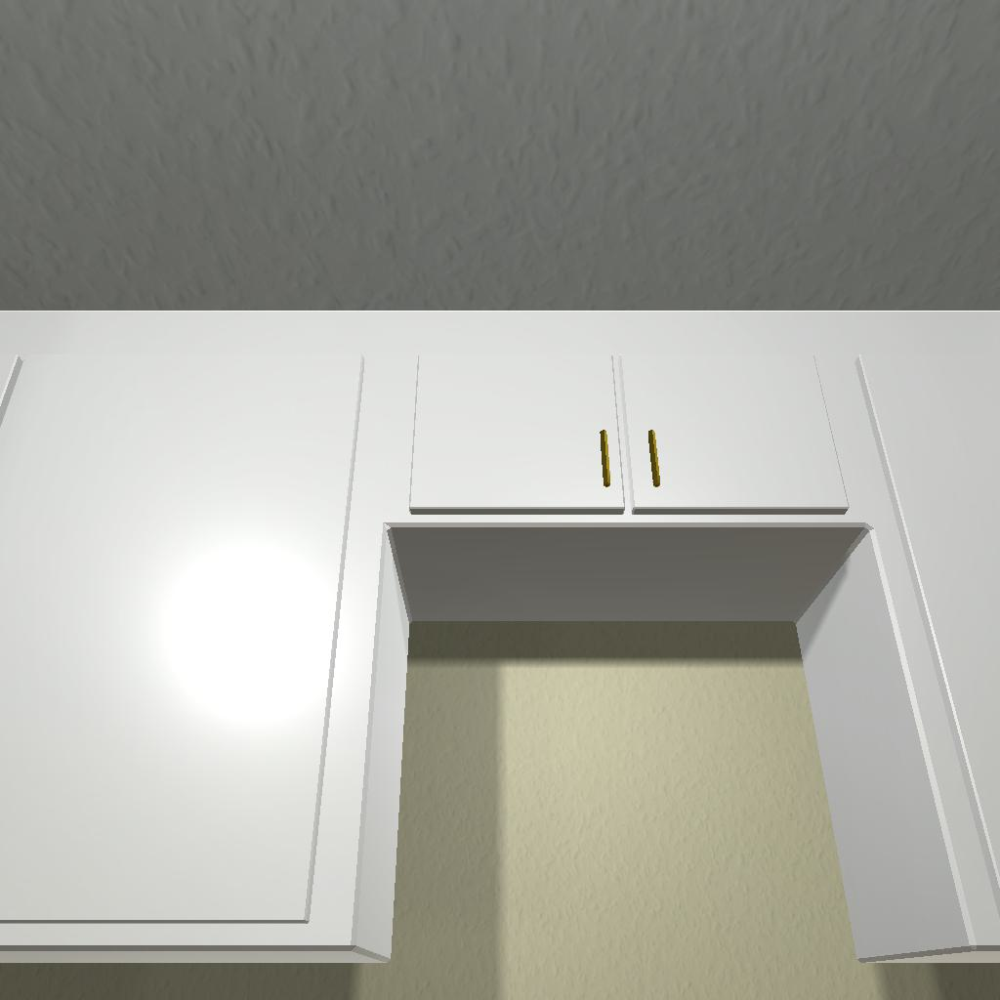

---------------------------------------------------------task: 18---------------------------------------------------------
--------------------------------------------------------------------------------------------------------------------------------------------------------------------
--------------------------------------------------------------------------------------------------------------------------------------------------------------------
Step:--------------------------------------------------------------------------13-------------------------------------------------------------------------------
----------------------------------------
VLM Prompt:
Image1:
Image2:
Image3:
**Instruction**
1. Analyze the provided images to identify all visible household objects and compare the difference between images (e.h. whether the object is opened or not and taken on hand or not), focusing on those relevant to the task description "put a cool pot in cabinet."
2. Use the analysis of images and the task hint "The agent must find an object of the desired type, pick it up, go to a fridge, cool the object with the fridge, then find the correct location to place it, and put it down there. The agent does not need to use the fridge button or open the fridge to cool the object, and the agent just needs to do action that is "cool the object with the fridge"." to answer the question: what is the most reasonable action in the choices for the task description "put a cool pot in cabinet"?
3. Decide and write the answer using the template: The answer is: (i): , where i is the real number. If there is no desired object in images, search every place based on **Initial Observation** to find the object. And if no one is exactly correct, choose a similar answer.
**Initial Observation**
You are in the middle of a room. Looking quickly around you, you can see cabinet (1-20), countertop (1-3), coffeemachine (1), toaster (1), sink (1), fridge (1), microwave (1), garbagecan (1), drawer (1-3), sinkbasin (1), stoveburner (1-4), shelf (1-3)
**Answer Choices**
(1): go to cabinet 1
(2): go to cabinet 2
(3): go to cabinet 4
(4): go to cabinet 6
(5): go to countertop 1
(6): go to coffeemachine 1
(7): go to cabinet 7
(8): go to toaster 1
(9): go to cabinet 8
(10): go to sink 1
(11): go to microwave 1
(12): go to garbagecan 1
(13): go to cabinet 9
(14): go to cabinet 10
(15): go to countertop 2
(16): go to cabinet 11
(17): go to cabinet 12
(18): go to drawer 1
(19): go to countertop 3
(20): go to drawer 2
(21): go to cabinet 13
(22): go to sinkbasin 1
(23): go to cabinet 14
(24): go to drawer 3
(25): go to stoveburner 1
(26): go to stoveburner 2
(27): go to stoveburner 3
(28): go to cabinet 15
(29): go to stoveburner 4
(30): go to cabinet 16
(31): go to cabinet 17
(32): go to cabinet 18
(33): go to cabinet 19
(34): go to cabinet 20
(35): go to shelf 1
(36): go to shelf 2
(37): go to shelf 3
(38): open cabinet 5
(39): close cabinet 5
(40): examine cabinet 5
**Answer**
Let's think step by step by following the instructions.
----------------------------------------
----------------------------------------
Original Response:
Firstly, we need to identify the visible household objects in each image:
Image1: We can see a cabinet with two doors that are closed. There is no visible pot or any other object that can be identified as the desired type for the task.
Image2: This image shows a side view of what appears to be a fridge on the left and a countertop with a red object that seems like a microwave or an oven. There is no pot visible in this image.
Image3: Similar to Image1, we can see a cabinet with two doors that are closed. Once again, there is no visible pot or any other object that can be identified as the desired type for the task.
According to the task description "put a cool pot in cabinet," we need to find a pot, cool it with the fridge, and then put it in the cabinet. Since no pot is visible in the images, we need to search every place based on the Initial Observation to find the object. The agent does not need to use the fridge button or open the fridge to cool the object.
None of the answer choices directly reference finding a pot or cooling it with the fridge, but we can infer that the pot may be located in a cabinet since that's where kitchen items are typically stored. Cabinet 5 is the only one mentioned in a different context (open/close/examine), which could indicate that the pot we need is in there.
The most reasonable action to take for the task description "put a cool pot in cabinet" would be to first locate the pot. Since Cabinet 5 is the only one mentioned differently and considering that pots are usually stored in cabinets, it may be reasonable to investigate this cabinet first.
The answer is: (38): open cabinet 5
----------------------------------------
----------------------------------------
>>> Refine Original VLM Response and Get Pure Action: open cabinet 5
----------------------------------------
-----------------------------------------------------------------
Running time: 20.271642684936523 seconds
Total Money: 11.083570000000002
-----------------------------------------------------------------
-----------------------------------------------------------------
Text Observation:You open the cabinet 5. The cabinet 5 is open. In it, you see nothing.
-----------------------------------------------------------------
UNSUCCEED